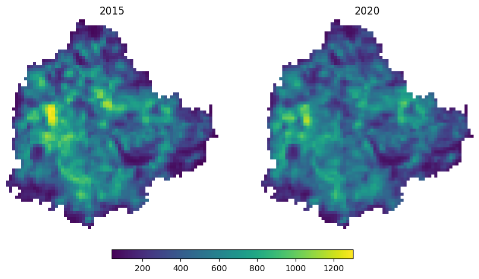

Loading Data from a Static STAC Catalog#
Overview#
STAC (SpatioTemporal Asset Catalog) is an open specification that makes geospatial data more discoverable and accessible. A static STAC catalog is a collection of JSON files hosted on a file server or object storage — no dedicated API server is required. This tutorial demonstrates how to search and load data from a static STAC catalog using pystac-client and odc-stac.
We use the OpenLandMap STAC catalog hosted on Wasabi cloud storage and load nighttime lights (VIIRS) imagery for Bangalore, India, comparing 2015 and 2020 to observe changes in urban extent and intensity.
Input Layers:
bangalore.geojson: City boundary for Bangalore, India, used as the area of interest (AOI).
Output:
nightlights_2015.tif: Cloud-Optimized GeoTIFF of nighttime lights radiance for 2015, clipped to Bangalore.nightlights_2020.tif: Cloud-Optimized GeoTIFF of nighttime lights radiance for 2020, clipped to Bangalore.
Data Credit:
Nighttime lights VIIRS dataset hosted on OpenLandMap STAC Catalog. Elvidge, C. D., Zhizhin, M., Ghosh, T., Hsu, F. C., & Taneja, J. (2021). Annual time series of global VIIRS nighttime lights derived from monthly averages: 2012 to 2019. Remote Sensing, 13(5), 922. https://doi.org/10.3390/rs13050922
Bangalore Ward Maps Provided by Spatial Data of Municipalities (Maps) Project by Data{Meet}.
Running the Notebook:
The preferred way to run this notebook is on Google Colab.

Setup and Data Download#
The following blocks of code will install the required packages and download the datasets to your Colab environment.
%%capture
if 'google.colab' in str(get_ipython()):
!pip install pystac-client odc-stac rioxarray dask['distributed']
from odc.stac import stac_load
import geopandas as gpd
import matplotlib.pyplot as plt
import os
import pystac_client
import rioxarray as rxr
import xarray as xr
Setup a local Dask cluster. This distributes the computation across multiple workers on your computer.
from dask.distributed import Client
client = Client() # set up local cluster on the machine
client
If you are running this notebook in Colab, you will need to create and use a proxy URL to see the dashboard running on the local server.
if 'google.colab' in str(get_ipython()):
from google.colab import output
port_to_expose = 8787 # This is the default port for Dask dashboard
print(output.eval_js(f'google.colab.kernel.proxyPort({port_to_expose})'))
data_folder = 'data'
output_folder = 'output'
if not os.path.exists(data_folder):
os.mkdir(data_folder)
if not os.path.exists(output_folder):
os.mkdir(output_folder)
def download(url):
filename = os.path.join(data_folder, os.path.basename(url))
if not os.path.exists(filename):
from urllib.request import urlretrieve
local, _ = urlretrieve(url, filename)
print('Downloaded ' + local)
data_url = 'https://github.com/spatialthoughts/geopython-tutorials/releases/download/data/'
aoi = 'bangalore.geojson'
download(data_url + aoi)
Search and Load Nighttime Lights Imagery#
We load the GeoJSON boundary for the city of Bengaluru and extract its geometry.
aoi_path = os.path.join(data_folder, aoi)
aoi_gdf = gpd.read_file(aoi_path)
geometry = aoi_gdf.geometry.union_all()
We can now load the OpenLandMap STAC Catalog and fetch the nightlights.average_viirs.v21 collection. See Read a STAC Catalog Using PySTAC for more details on all available methods to browse a static catalog.
catalog = pystac_client.Client.open(
'https://s3.eu-central-1.wasabisys.com/stac/openlandmap/catalog.json')
ntl_collection = catalog.get_child('nightlights.average_viirs.v21')
Fetch all STAC Items.
items = list(ntl_collection.get_all_items())
items[0]
/usr/local/lib/python3.12/dist-packages/pystac_client/collection_client.py:149: FallbackToPystac: Falling back to pystac. This might be slow.
root._warn_about_fallback("ITEM_SEARCH")
Note: Currently there is an error in the bounding box metadata for items in this collection. The order of coordinates is swapped
(62.000833333333446, -180.0, 87.37, 180.00000000000028)which should be(-180.0, 62.000833333333446, -180.0, 180.00000000000028, 87.37). This results in empty results when loading data for certain regions.
#
Load Images#
ds = stac_load(
items,
bands=['nightlights.average_viirs.v21_m_500m_s'],
resolution=500,
bbox=geometry.bounds,
crs='utm',
chunks={}, # <-- use Dask
)
ds
<xarray.Dataset> Size: 445kB
Dimensions: (y: 70, x: 72, time: 22)
Coordinates:
* y (y) float64 560B 1.455e+06 ... 1....
* x (x) float64 576B 7.668e+05 ... 8....
* time (time) datetime64[ns] 176B 2000-0...
spatial_ref int32 4B 32643
Data variables:
nightlights.average_viirs.v21_m_500m_s (time, y, x) float32 444kB dask.array<chunksize=(1, 70, 72), meta=np.ndarray>da = ds['nightlights.average_viirs.v21_m_500m_s']
da_subset = da.sel(time=['2015', '2020'])
da_subset
%%time
da_subset = da_subset.compute()
geometry_crs = aoi_gdf.to_crs(da_subset.rio.crs).geometry
da_clipped = da_subset.rio.clip(geometry_crs)
fig, axes = plt.subplots(1, 2)
fig.set_size_inches(10, 5)
# Determine the global min and max for consistent scaling
vmin = da_clipped.min().item()
vmax = da_clipped.max().item()
plot_image_0 = da_clipped.sel(time='2015').plot(
ax=axes[0], vmin=vmin, vmax=vmax, add_colorbar=False)
axes[0].set_title('2015')
plot_image_1 = da_clipped.sel(time='2020').plot(
ax=axes[1], vmin=vmin, vmax=vmax, add_colorbar=False)
axes[1].set_title('2020')
for ax in axes.flat:
ax.set_axis_off()
ax.set_aspect('equal')
cbar_ax = fig.add_axes([0.3, 0.05, 0.4, 0.03]) # [left, bottom, width, height]
fig.colorbar(plot_image_0, cax=cbar_ax, orientation='horizontal')
plt.show()

Save Images#
def export_year(year):
da_year = da_clipped.sel(time=f'{year}', method='nearest')
file_name = f'nightlights_{year}.tif'
file_path = os.path.join(output_folder, file_name)
da_year.rio.to_raster(file_path, driver='COG')
print(f'Saved nightlights for {year} to {file_path}')
export_year('2015')
export_year('2020')